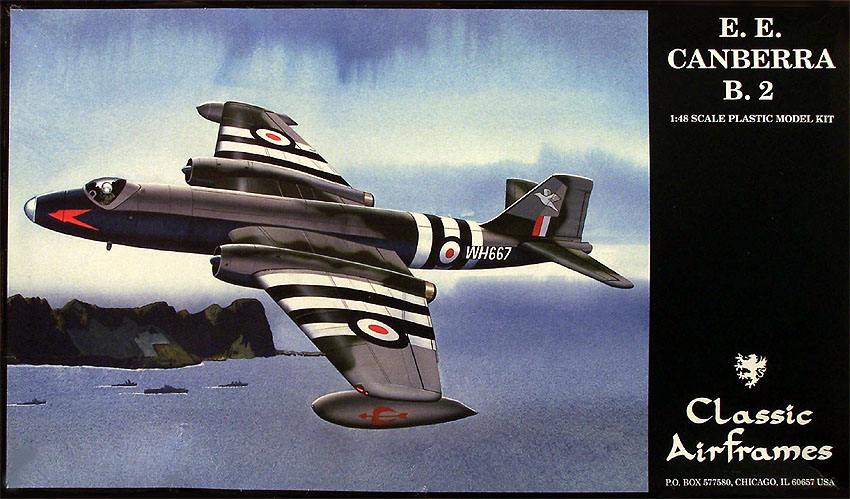
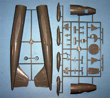
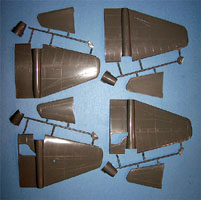
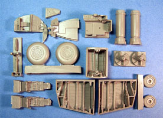
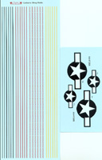
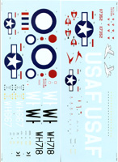

{kind=link}
{kind=link}
{kind=link}
{kind=link}
{kind=link}
{kind=link}


Classic Airframes E.E. Canberra B.2

Kit #4126
MSRP $59.95
Images and text Copyright © 2006 by Matt Swan
Developmental Background
In 1944 the Ministry of Aircraft Production was looking for a replacement for the DeHavilland Mosquito, as most aircraft manufactures were fairly busy maintaining the current demands for aircraft a company with little actual aircraft experience was selected to proceed with development. This company, English Electric put together a team headed by W.E.W. “Teddy” Petted who conceived an elegant aircraft that looks more like an enlarged Gloster Meteor with a circular fuselage with a should mounted wing. The basic philosophy followed with the Mosquito design by packing the largest possible bomb load with the most powerful engines into the smallest package. It was already known that defensive armament was of little use against purpose built interceptors so none was included rather opting to fly higher and faster to avoid the opposition.
With the conclusion of hostilities armament funding basically dried up and the program lost a lot of momentum but did not completely stop. Development of the type continued and in 1946 four prototypes were ordered with the maiden flight occurring on 13 May 1949. It was immediately apparent that this fast bomber was destined for success. The prototypes were designed to be crewed by two but with the inclusion of a bombardier station in the nose this was increased to three and the quintessential B.2 day bomber was placed into production with the first units equipping RAF Squadron 101 in 1951. Powered by two Rolls-Royce Avon turbojets the aircraft had a maximum speed of 580 mph (Mach 0.88) at 40,000 feet, could carry up to 6,000 pounds of ordinance with an 810 mile range. Ultimately thirty RAF squadrons were equipped with the Canberra and over a dozen foreign air forces utilized the type. In addition a variation was license built by the Glenn L. Martin Company for use with the U.S. Air Force as the B-57. The Canberra continued in operational service with the RAF until 2006 and many flying examples are still in existence. Total Canberra production concluded with 1352 examples manufactured.
The Kit
Modelers have been waiting a long time for a 1/48 scale kit of the Canberra and our buddy Uncle Jules came through big time with this kit. This kit is just the first of an entire line of Canberra variants that Classic Airframes is releasing. Before we start looking at the particulars of the kit I would like to address the packaging, the kit is boxed in a very light duty cardboard that collapses easily and will present some problems for the collector in relationship to storage – this one needs to be kept near the top of the pile. Inside the twelve clear parts are contained within separate heat sealed bubbles within a common poly bag with the solid colored pieces sealed in another compartment. Decals and instructions are placed in the bottom of the box and all parts survived shipping without incident although a few smaller pieces had separated from the sprue.
There are surprisingly few plastic pieces for a kit of this size with six sprues in the box but only three pieces on each of four parts trees. The fuselage comes as a four part assembly with the nose section being separate from the larger aft section. The instructions direct the modeler to assemble the two front/rear subassemblies first which I feel is an excellent idea. When I test fitted these pieces I did find that while the panel lines matched up very nicely there was not enough depth in the forward section alignment step and I had to shave some plastic off the inside lip of the front section to get a good fit. Really it was a quick and easy fix. Fitting the main left and right fuselage pieces I found a good fit with panel lines matching up well. There is an injection port on each side that centers on a panel line and fills that line right where the seam is and will need scribing after assembly. I also found a slight flash line along the top side of each fuselage at the seam that needs sanding. Besides the primary exterior pieces the interior bulkheads and landing gear are provided in plastic along with two round wing spars. No serious flash was seen nor were there any noticeable sink marks, injection pins are present but all in areas that will not be visible when assembled. All told there are forty four light gray injection molded pieces here.
As with most kits from Classic Airframes the interior detail pieces are provided in resin. In a separate bag we have the un-weighted wheels, well detailed landing gear bays, ejection seats and control panels. Burner cans with good interior details and engine intake fans are done in resin as well. These pieces are all very well done with few if any micro bubbles and standard pour stubs. Older Classic Airframes kits required considerable sanding of interior surfaces before the resin parts could be installed but it seems that this issue has been rectified with their newer kits. I have not had an opportunity to test fit any of these resin pieces at this time but from other reports I’ve gotten combined with what I can see of these pieces general fit should not be an issue. The resin package consists of twenty pieces bringing the total kit parts count to seventy six pieces with no parts unused.



You may click on the images above to view larger pictures.
Decals and Instructions
Instructions for this kit are fairly simple and straight forward. They begin with a six page pamphlet opening with a brief history of the aircraft followed by a complete parts map. A six point paint chart is included with the parts map. After this we have thirteen exploded view construction steps that include some color call-outs along with some construction tips. Exterior painting guide and decals placement instructions are provided on a separate set of instructions that show three aircraft; one from 44 Squadron RAF Nicosia in basic aluminum with cream and black identifying stripes, the second from 10 Squadron RAF Nicosia in a gray on gray camouflage and the third as a USAF gray over black scheme.


This kit contains a goodly set of decal sheets providing sufficient markings to properly decorate all three aircraft featured in the instructions. You may click on the images at the right to view larger pictures of the decals. The kit includes four sheets; the first two contain all the RAF markings along with some of the USAF markings and lots of stencils and service warnings. The third sheet contains additional USAF stars and the forth sheet is just a boat load of wing walk markings. All the decals display very good print registry and color density. The markings are all nicely thin and previous experience with Classic Airframes decals indicates there should be no problems with conventional setting solutions.
Conclusions
Classic Airframes is making sure they get their moneys worth from the masters and have released two versions of the Canberra already with two more to follow very shortly. We have waited a long time for this aircraft to be modeled and this series of kits makes it all worth while. The parts are all well done with a better than average fit for a limited run type of kit. The resin details add a level to the model that is very difficult to obtain with all injection molded kits. Instructions are clear and to the point, the decal package far exceeds anything you would find from most other model manufactures. As with all new kits that hit the market, at this time there are no aftermarket items but I am sure those folks will be introducing additional decal packages before much longer. I give this kit a very good recommendation and suggest you step away from the computer and get one before they are all gone.